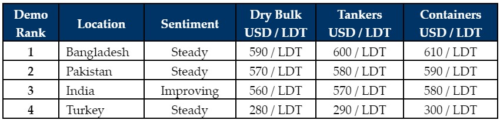

inWeekly Demolition Reports02/08/2021

Indian sub-continent markets remain positioned on a largely firm footing, as a surprising shortage of tonnage keeps demand stuck high and prices propped up.
The conclusion of Eid holidays has yet to see an increase in supply, despite the fact that the ongoing monsoon / summer holiday months could also be contributing to the overall sluggishness in the supply of units intended for recycling.
After this week’s stock market turmoil and the Chinese crackdown on various sectors (including tech and education), there wasn’t an immediate & corresponding knock on-effect on the shipping & steel markets. However, there are lingering fears that such arbitrary and severe restrictions may eventually impact these industries on a global scale, especially since China is such a fundamental driver in the international economies.
In other news, Covid-19 cases are on the rise in the sub-continent markets once again – particularly in Bangladesh, which had recently loosened its restrictions and there is now talk of further lockdown measures to slow the spread of the highly transmissible Delta variant, as global efforts continue to ramp up to supply the much needed vaccines.
India is also witnessing close to 50,000 fresh cases per day and about 1,000 fatalities per day. While these numbers are certainly down from the peaks of several months ago, these are still worrying statistics nonetheless. Even Turkish numbers are reportedly on the rise, with rumors of yet another lockdown in Turkey making the rounds.
As parts of Europe and the U.S.A. open up again, there are still varying degrees of lockdowns – especially across Asia as the battle against Covid-19 nears the 2 year mark.
For week 31 of 2021, GMS demo rankings / pricing for the week are as below.

Download PDFSource: GMS